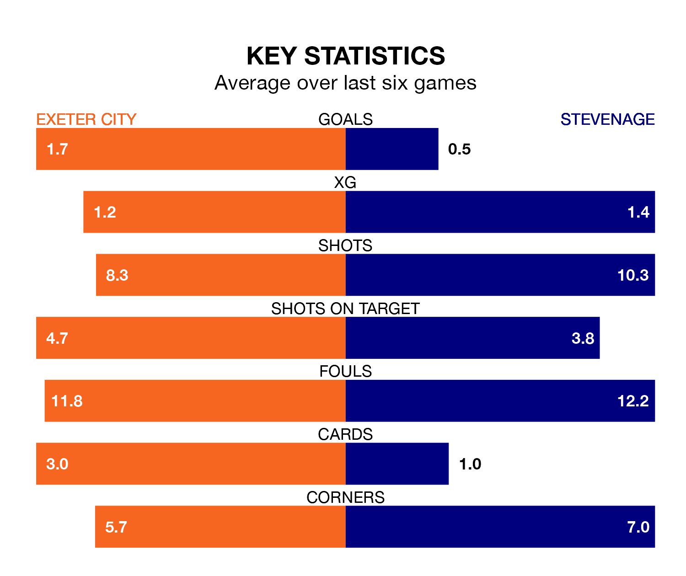

Stevenage are strong favourites to take all three points despite Exeter City's home advantage in Saturday's match at St James Park.
*Betting Company* are offering odds of 2.0 on Stevenage sealing the win, with the visitors sitting eighth in EFL League One table.
Exeter, who are 16th in the league and 13 points behind the Boro, are priced at 3.7 to win. A draw is set at 3.45.
In the last 10 years, Exeter and Stevenage have played each other on 17 occasions. Exeter won 10 of them, Stevenage one, and they drew six times.
On average, Exeter scored 1.7 goals and the Boro 0.9 in those matches.
Their last meeting was on December 16, when they played out a 1-1 draw.
In Jamie Reid, Stevenage have one of the league's most on-form strikers so far this season. He has notched 17 goals in 38 appearances, to sit third in the scoring charts.
Exeter's top scorers, with five goals each, are Sonny Cox and Reece Cole.
City are in reasonable form in EFL League One, with three wins and two draws from their last six games.
With no wins and four draws over that period, the Boro's form is much worse – they have taken four points from 18, compared to the home side's 11.
With 36 goals in 41 games so far this season, Exeter are scoring at below the league average rate with 0.9 goals per game. And they are conceding at an average rate, letting in 54 goals at a rate of 1.3 per game.
The visitors are also below average scorers, with 1.2 goals per game, compared to a league average of 1.3. They have conceded 1.0 goal per game.
Exeter's last match was on Monday, a 2-1 win against Cheltenham Town, with Cole and Luke Harris getting the goals for Exeter.
Stevenage drew 0-0 with Charlton Athletic last time out, also on Monday.
Updated: 16:41 (UTC), 04/04/24